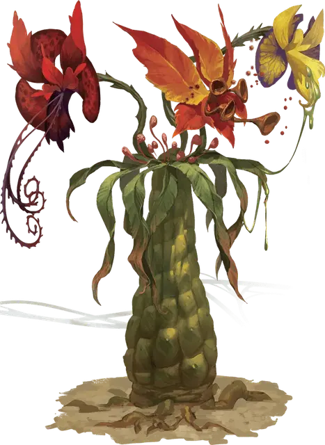

Вайя трёхсоцветная
Tri-flower Frond
Среднее Растение, без мировоззрения

Класс Доспеха 10
Хиты 11 (2к8 + 2)
Скорость 5 футов
| мод | спас | ||
|---|---|---|---|
| СИЛ | 1 | −5 | −5 |
| ЛОВ | 10 | +0 | +0 |
| ТЕЛ | 12 | +1 | +1 |
| мод | спас | ||
|---|---|---|---|
| ИНТ | 1 | −5 | −5 |
| МДР | 10 | +0 | +0 |
| ХАР | 1 | −5 | −5 |
Иммунитет к состояниям ослепление, сбивание с ног, глухота, истощение
Чувства слепое зрение 30 футов, пассивное Восприятие 10
Опасность 1/2 (100 опыта)
Бонус мастерства +2
Действия
Мультиатака. Вайя трёхсоцветная использует оранжевый цветок, потом жёлтый цветок и затем красный цветок.
Оранжевый цветок. Вайя трёхсоцветная выбирает одно существо, которое она может видеть в пределах 5 футов от себя. Цель должна преуспеть в спасброске Телосложения Сл 11 или станет отравленной на 1 час. Пока цель отравлена таким образом, цель находится без сознания. В конце каждой минуты отравленная цель может повторить спасбросок, оканчивая эффект на себе при успехе.
Жёлтый цветок. Вайя трёхсоцветная выбирает одно существо, которое она может видеть в пределах 5 футов от себя. Цель должна преуспеть в спасброске Ловкости Сл 11, или её покроет коррозионным соком, который наносит 5 урона кислотой в начале каждого хода цели. Обливание цели водой снижает урон от кислоты на 1 за пинту или флягу использованной воды.
Красный цветок. Рукопашная атака оружием: +2 к попаданию, досягаемость 5 футов, одно существо. Попадание: 2 (1к4) колющего урона, и цель схвачена (Сл высвобождения 11). Пока захват не окончен, цель получает в начале каждого своего хода 5 (2к4) урона ядом. Цветок может одновременно удерживать в захвате только одну цель. Другое существо, находящееся в пределах досягаемости вайи трёхсоцветной, может использовать своё действие, чтобы закончить захват на цели.
Описание
Когда полностью вырастает, вайя трёхсоцветная достигает в высоту от 6 до 7 футов. Он имеет три ярких, трубчатых цветка, каждый размером с человеческую голову, и каждый из них отличается цветом: интенсивно-красный, ярко-оранжевый и ярко-жёлтый. Каждый из цветков может навредить существу ужасающим образом, отличным друг от друга.